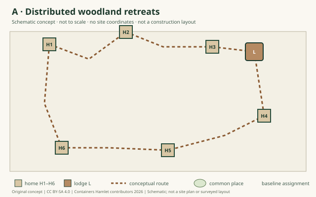
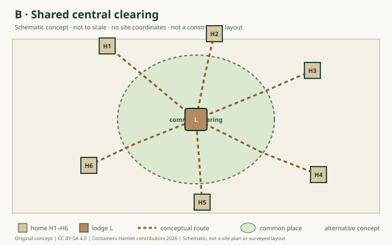

The existing distributed arrangement is the baseline. Two alternatives explore a central clearing and a woodland spine with social pockets. They are conceptual comparisons, not proposals, and no arrangement is declared best.
Baseline preserved. The current site plan remains the baseline. The two alternatives are schematic: they do not use surveyed coordinates, do not replace the site plan and do not establish feasibility, cost, ecological performance or accessibility.
The current illustrative site plan is the baseline. The alternative diagrams below are schematic and do not use its coordinates.
Compare two arrangements
Comparing the baseline with the central clearing.
Left

Right

Switch with the native selects. The comparison updates the URL so it can be shared; the baseline can be restored at any time. No scenario is automatically ranked.
All three arrangements
The full descriptions, trade-offs and questions are below, so the page remains useful without JavaScript.
Scenario A · baseline
Distributed woodland retreats
Geometry: existing illustrative site assignment · Evidence: conceptual
Keep the six homes dispersed across the property, each with its own relationship to rock, trees and view. The lodge remains near the entrance and shared parking.
Potential advantages
Greater separation and visual privacy between households.
Individual orientations and distinct identities for each home.
Shared outdoor life is optional rather than constantly visible.
Trade-offs
Longer pedestrian and service connections.
More dispersed infrastructure and maintenance.
Fewer spontaneous social encounters.
Possible additional ecological disturbance from paths and services.
Evaluation questions
Can every home reach the lodge and a shared outdoor place without a car?
Are the paths short and legible enough for ordinary visits?
Does dispersal protect privacy without making shared life impractical?